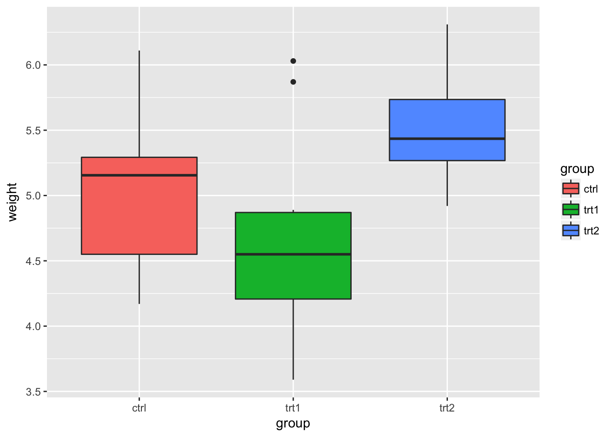

This section describes the concentration risk tool..
The concentration risk tool below..
The solution is given by..
The conclusion is…
Section 2 is about..
In this analyses..
library(ggplot2)
bp <- ggplot(data=PlantGrowth, aes(x=group, y=weight, fill=group)) + geom_boxplot()
bp
library(plotly)
library(ggplot2)
library(dplyr)
p <- ggplot(iris, aes(Sepal.Length, Petal.Length, colour=Species)) + geom_point() + theme_bw()
ggplotly(p) library(leaflet)
leaflet() %>%
addTiles %>% # Add default OpenStreetMap map tiles
setView(lng = 5.0, lat = 51.0, zoom = 6)